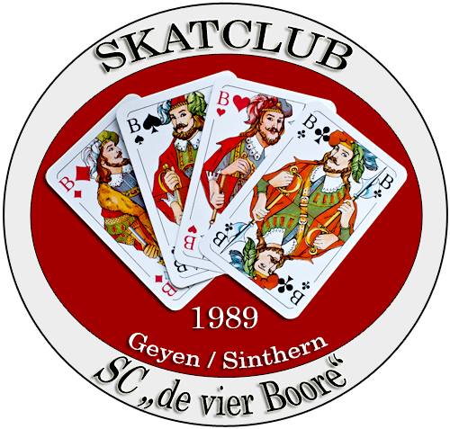

de 4 Buure – Skatliste
Spielliste öffnen ▶
Auf dem iPad zum Home-Bildschirm hinzufügen:
Diese Seite (
de4buure.html
) offen lassen → unten „Teilen" antippen → „Zum Home-Bildschirm". Das erzeugt eine „Buure"-Kachel, die die Liste immer im Buure-Modus öffnet.